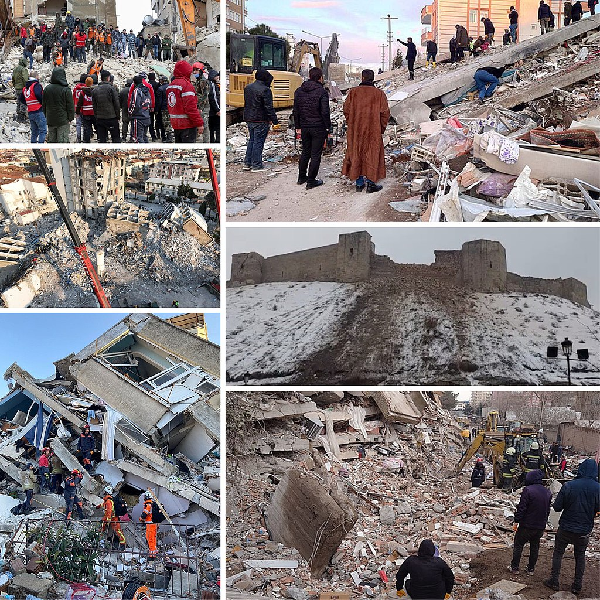

6 Şubat 2023 Kahramanmaraş-Gaziantep Depremi
Türkiye'de meydana gelmiştir. Suriye'de hissedilmiştir. 9 saat arayla yaşanmıştır. 7.7 ve 7.6 şiddetindedir.
| Ülke
| Ölü Sayısı
|
| Türkiye
| 43.556
|
| Suriye
| 6680
|

Wikipedia'nın bilgilerini görüntülemek için tıklayın
En büyük yardım kuruluşlarından biri AFAD'tır